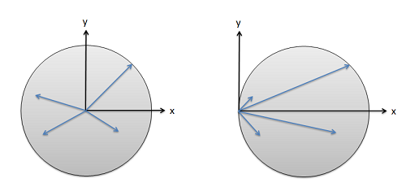
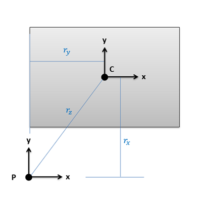

The Parallel Axis Theorem
Just as we had for centroids, there is a method of composite parts for area and mass moments of inertia. This represents an alternative to the integration method, and is usually faster and easier than using the integration method. The method of composite parts here is similar to what we did with centroids and involves breaking down the shape into simple parts, looking up generalized moment of inertia values in tables of values, and then combining those values into the composite whole. One big difference though is that for this method we will need to apply something called the parallel axis theorem to adjust our moment of inertia values before we can combine the results into a whole. We will take some time here to examine the parallel axis theorem before jumping into the method of composite parts as a whole.
What is the Parallel Axis Theorem
The parallel axis theorem relates to something we have identified with the prior sections. Specifically, that the moment of inertia (both area and mass), will be dependent upon the axis or point we are taking the moment of inertia about. Where as a shape has only one centroid or center of mass, a shape can have infinite moments of inertia depending on the axis or point we choose at the start. The parallel axis theorem will relate the moment of inertia taken about one axis for a shape to the moment of inertia about any other point.
Specifically, the parallel axis theorem will relate the moment of inertia about the centroid (C) or center of mass (G) to the moment of inertia about any other point (P), by adding a factor that is area times distanced squared for area moments of inertia, or mass times distance squared for any mass moment of inertia This can be summed up with the following two equations.
| For Area MOI: | \[I_{xP}=I_{xC}+A*r^{2}\] |
| For Mass MOI: | \[I_{xxP}=I_{xxG}+m*r^{2}\] |
We will always start by taking the moment of inertia about the centroid, since this will be the minimum possible value for the moment of inertia for a given shape about any possible axis or point. The centroid represents the "center" of the shape, and will minimize the average distance to any point on that shape. As we move away from the centroid, the average distance to all the parts of the shape increases, and we can expect a predictable increase in the moment of inertia as a result.

Using the Parallel Axis Theorem
Now that we have our basic equations, let's talk about using the parallel axis theorem to calculate some moments of inertia. For this process we will generally need to have the moment of inertia about the centroid (C), then we can find the moment about any other point (P). These moment of inertia values can be be calculated via integration as was done in the previous sections, or more commonly they can be looked up in tables like the ones that can found in the sidebar to the right.
Once you have the moment of inertia about the centroid, we will simply need to add a factor of area times r squared for area moments of inertia, or mass times r squared for mass moments of inertia The area or mass values are simple, representing the area or the mass of the object we are examining. The r value in both cases how far we are moving the axis we are taking the moment of inertia about.
For area moments of inertia, this will be a vertical distance representing how far up or down we are moving the x axis (for Ix adjustments), a horizontal distance representing how far left or right we are moving the y axis (for Iy adjustments), or a diagonal distance measuring how far we are moving the z axis (for Jz adjustments).

For mass moments of inertia, we will be working in three dimensions, so the r values can get a little more complicated. At its core though, this r values represents how far we are moving the axis of rotation.
Another way we can use the parallel axis theorem is essentially go through the above process backwards. If we have the moment of inertia about some arbitrary point to start with (usually because it made the integration easier) we can find the moment of inertia about the centroid by subtracting off our area times r squared or mass times r squared value. Evidence of this process can be seen in some of the equations in our moment of inertia table.
One final note of caution though is that we cannot use the moment of inertia about one arbitrary point to directly find the moment of inertia about another arbitrary point. We must always move away from or to the centroid for the parallel axis theorem to work.